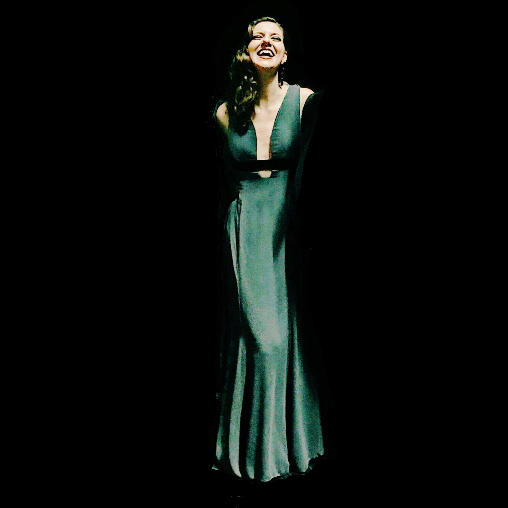

Die Mezzosopranistin Martina Mikelić ist für ihre außergewöhnliche Tiefe, ihre markante dunkle Klangfarbe und ihre intensive Bühnenpräsenz bekannt. Sie ist international sowohl auf der Opern- als auch auf der Konzertbühne tätig. Ihre künstlerische Arbeit führte sie an bedeutende Opern- und Konzerthäuser Europas und Asiens, darunter die Wiener Staatsoper, Staatsoper Stuttgart, Teatro Real Madrid, Komische Oper Berlin, Musikverein Wien Accademia Nazionale di Santa Cecilia Roma, Tokio Bunka Kaikan, Konzerthaus Wien sowie zu den Salzburger Festspielen.
Im Laufe ihrer Karriere arbeitete Martina Mikelić mit zahlreichen international renommierten Dirigentinnen und Dirigenten zusammen, darunter Riccardo Muti, Valery Gergiev, Mirga Gražinytė-Tyla, Christian Thielemann, Daniele Gatti, Franz Welser-Möst, Peter Schneider, Cornelius Meister, Pascal Rophé, Henrik Nánási, Ivan Repušić, Sascha Goetzel, Antony Hermus und vielen anderen. Darüber hinaus verbindet sie künstlerische Zusammenarbeit mit bedeutenden Orchestern und Ensembles.
Zu ihren aktuellen und kommenden Engagements zählen ihr Debüt als Prinzessin Eboli bei den weltweit ältesten Sommerfestspielen in Split, Rusalka an der Oper Graz, die Silvestergala mit dem Symphonieorchester HRT und einem der weltweit renommiertesten Pianisten, Ivo Pogorelić , sowie Suor Angelica an der Nederlandse Reiseopera.
Im Jahr 2026 war sie beim Neujahrskonzert mit der Jungen Philharmonie Wien zu erleben. Zudem gab sie ihr Debüt in Weimar mit der Staatskapelle Weimar und wirkte in der Welturauführung der Oper Station Paradiso an der Staatsoper Stuttgart, einem neuen Werk der Komponistin Sara Glojnarić.
2025 war geprägt von mehreren bedeutenden Debüts: Martina Mikelić debütierte am Teatro Real, als Jezibaba am Kroatischen Nationaltheater in Zagreb, sowie bei den Dubrovnik Sommerfestispielen.
2024 kehrte sie an die Staatsoper Stuttgart zurück und glänzt in ihrer Debütrolle als Die Hexe (Hänsel und Gretel). Es folgte ihr Debüt in ihrer Heimatstadt Split mit der Titelpartie in Jakov Gotovacs Oper (Mila Gojsalić) am Kroatischen Nationaltheater Split. Ein weiteres Highlight war ihr Auftritt in Salzburg, wo sie in Thomas Mikas außergewöhnlicher Inszenierung von Hänsel und Gretel mit großem Erfolg die beiden Rollen der Gertrud und der Hexe verkörperte.
2023 debütierte sie an der Staatsoper Stuttgart sowie im Konzerthaus Vatroslav Lisinski Zagreb. Dort war sie gemeinsam mit der Pianistin Martina Filjak und dem Kroatischen Rundfunk-Sinfonieorchester unter der Leitung von Pascal Rophe , beim ersten Dora Pejačević Festival zum Gedenken an ihren 100. Geburtstag zu hören. Das Konzert wurde sowohl im Fernsehen als auch im Radio übertragen.
Weitere internationale Stationen ihrer Laufbahn umfassen unter anderem die Wiener Staatsoper, die Accademia Nazionale di Santa Cecilia in Rom, Madrid, Zürich, Amsterdam, Graz, Saragossa, Tokio, Moskau, Salzburg, Aarhus, Hamburg, Berlin und viele andere.
Bereits während ihres Studiums wurden ihre ausgezeichnete Bühnenpräsenz und ihre außergewöhnliche Altstimme anerkannt. So wurde sie von der MDW als Künstlerin des Monats, sowie als eine von 10 Talenten aller österreichischen Kunst-Universitäten ausgewählt. Das Radiomagazin Intrada (Ö1/ORF) widmete ihr daraufhin ein Porträt.
Zudem wurde sie zweimal für den Österreichischen Musiktheater Preis nominiert: 2013 in der Kategorie „Bester Nachwuchs“ (Page in Salome) sowie 2015 für die „Beste weibliche Nebenrolle“ (Florence Pike in Albert Herring)
Bereits im Alter von 23 Jahren erhielt sie das Angebot, festes Ensemblemitglied der Volksoper Wien zu werden. Ihr Debüt gab sie dort 2009 als Dritte Dame in Die Zauberflöte. Seither ist sie in zahlreichen Partien zu erleben, darunter: Carmen (Carmen), Hippolyta (A Midsummer Night's Dream), Orlofsky (Die Fledermaus), Magdalena (Der Evangelimann), Jezibaba (Rusalka), Zita (Gianni Schicchi), Maddalena (Rigoletto), Page (Salome), Florence Pike (Albert Herring), Kontschakowna (Fürst Igor), Afra (La Wally), die Stimme der Mutter (Les contes d'Hoffmann), die Altpartie in Berlioz' Roméo et Juliette, die Botin (Das Wunder der Heliane), Mary (Der fliegende Holländer) und viele weitere.
